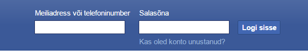
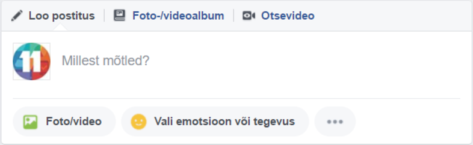
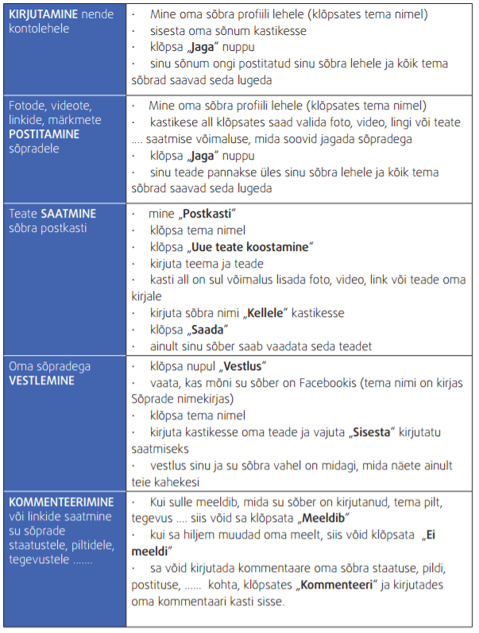

Kuues tund
Kuues Tund
Tänases tunnis õpime kasutame Facebooki
Facebook on 2004. aasta veebruaris alguse saanud veebipõhine suhtlusvõrgustik, mida omab ja käitab eraõiguslik äriühing Facebook, Inc. Suhtluskeskkonna kasutajad saavad lisada sõpru, saata neile sõnumeid ja uuendada oma isiklikke veebilehti, et teavitada oma sõpru enda jaoks olulistest sündmustest ja jagada pilte. Lisaks saavad kasutajad liituda gruppidega, mis on korraldatud asukohapõhiselt, nt linna, elukoha, töökoha, kooli jne asukoha järgi, või ka huvide järgi. Teenusel on üle miljardi aktiivse kasutaja.
Üheks vahest kõige paremaks omaduseks Facebook’i (ja muidugi ka teiste sellelaadsete portaalide) on suhtlemise võimalus kõigi inimestega. Seda nii otsesuhtlusvormis (nagu Messenger) kui ka e-kirja või lihtsalt märkme vormis. Seejuures teravaks erinevuseks võrreldes teiste samasuguste võrgustike ees on lihtsus.
Võtame näiteks otsesuhtluse: kui sina ja mõni su sõber on samal ajal Facebook’i lehel, võid temaga rääkima hakata. Alumisel ribal on näha sees olevaid kontakte ja klikkamine nende nimel avab vestlusakna. Ei mingeid imevidinaid, lihtne teksti edastamine lihtsalt klikkides.
Facebook on ka tore asjade meeleshoidja ja meeldetuletaja. Iganädalaselt näed sõprade-tuttavate tulevaid sünnipäevi, oma kallima tähtpäevi ning ürituste toimumisi. Viimane on väga tore variant: korraldad näiteks sünnipäeva, lood ürituse kohta infolehe, saadad sõpradele kutse ja nemad vastavad, kas saavad tulla või pigem mitte.
Paraku ei pääse Facebook ka kriitikast. Kuigi sinu personaalne avaleht on kommertsteadetest puhas, võivad sõprade erinevad rakenduste teated muutuda ülekoormavaks. Niisamuti saavad kasutajad lisada kuulutusi. Et registreeruda võivad ka ettevõtted, leidub erinevaid teateid kuhjaga. Pikapeale see väsitab.
Samas, kui sa oled mõne Facebook’is oleva klubi või ettevõtte austaja, on sul võimalus ka fänniks hakata. Sealt edasi võib seda soovitada ka oma sõpradele.
Milleks on hea Facebook:
- Ajal, kui sa ei saa oma sõpradega/perega kohtuda
- Et leppida kokku kohtumine ja tegevus oma sõpradega
- Et rääkida oma sõpradega koos veedetud ajast
Facebooki sisse logimine
- Mine lehele Facebook.com
- Lehe üleval paremas nurgas on vaja sisestada kasutajanimi ja parool

- Antud juhul kasutame selleks otstarbeks ette valmistatud kasutajaid:
- Kasutajanimi: "arvutiopetus11@gmail.com" | Parool: "kristiine"
- Kasutajanimi: "arvutiopetus22@gmail.com" | Parool: "kristiine"
- Kasutajanimi: "arvutiopetus33@gmail.com" | Parool: "kristiine"
- Kui kasutajanimi ja parool on sisestatud, vajutage nupule '[Logi Sisse]'
Facebooki kasutamine
Niipea kui sa klõpsad „Logi sisse“, ilmuvad Facebooki lehel kolm põhisammu Facebooki
konto loomiseks.
- Sõprade leidmine (sa võid selle vahele jätta ja teha seda hiljem)
- Profiili informatsioon (sa võid selle vahele jätta ja teha seda hiljem)
- Profiili pilt (sa võid selle vahele jätta ja teha seda hiljem)
Facebooki profiil on sinu Facebooki lehekülg. Sa esitled end teistele selle lehe kaudu. Siin
on ka kogu informatsioon sinu tegevusest Facebookis.
Sa saad sisestada oma profiili Facebooki kontot luues või hiljem. Sa saad samuti muuta
olemasolevat informatsiooni, mil iganes soovid.
Sinu profiil sisaldab erinevat informatsiooni sinust:
- Üldine info (sinust endast) – sa ei pea kirjutama kõigest. Sa saad valida, mida sa
kirjutad. Klõpsa „Salvesta muutused“ kui oled lõpetanud.
- Isiklikud andmed: siin sa saad kirjutada oma lemmik raamatutest, muusikast ....
asjadest, mida sa soovid, et su sõbrad teaks.
- Kontaktandmed: on soovituslik mitte kirjutada oma aadressi ja telefoni numbrit.
See on informatsioon, mida sa jagad ise oma sõpradele, kui nad seda vajavad. sinu
aadress, telefoni number.
- Mõnedel andmetel on piiramise võimalus: vali, kes võivad näha kontaktandmeid. Sinu
kontaktandmeid võivad ära kasutada inimesed, keda sa ei tunne. On turvalisem, kui
ainult sinu sõbrad saavad näha sinu kontaktandmeid
Avaleht

See on lehekülg, mida sa näed alati peale enda sisse logimist. Siin sul on:
- jooksvad uudised: mis annab sulle infot sinu sõprade tegevusest Facebookis
- soovitused sinu sõpradelt
- sõbrasooviavaldused, klubidega ühinemiskutsed jne
- sündmused: meeldetuletus sündmustest, millest plaanid osa võtta ja sõprade
sünnipäevade meeldetuletus.
FACEBOOKI UUDISED – JOOKSVAD UUDISED
See ilmub alati, kui sa logid end sisse ja asub „Kodu“ all. Värskete uudiste jaoks pead
klõpsama „Viimased“.
Jooksvad uudised teavitavad sind sinu sõprade Facebooki tegevusest – see võimaldab sul
näha, mida su sõbrad on vahepeal teinud.
Siin sa näed:
- oma sõprade staatust
- pilte, mida su sõbrad on üles pannud
- linke, mida su sõbrad on postitanud
- gruppe, millega su sõbrad on ühinenud
- kellega su sõbrad omakorda sõbrad on
- lehti, mille fännideks su sõbrad on hakanud
- sündmusi, millest su sõbrad plaanivad osa võtta
See, mida sina teed Facebookis, ilmub samuti jooksvates uudistes ja seda näevad ka sinu
sõbrad
Millest mõtled

Vahel võid sa midagi kirjutada „Millest sa mõtled?“ kasti. See ilmub ka sinu sõprade
jooksvates uudistes.
Sa võid kirjutada sellest:
- mida sa teed
- kui sinuga on midagi erilist juhtunud ja sa soovid seda oma sõpradega jagada
- kui sa soovid midagi tähtsat oma sõpradega jagada
Sõpradega suhtlemine

KUIDAS SOOVIDA FACEBOOKIS OMA SÕPRADELE PALJU ÕNNE
Inimesed on õnnelikud, kui nende sõbrad mäletavad nende sünnipäevi ja soovivad neile
„Palju õnne“.
Oma Facebooki avalehelt näed sa, kas mõnel su sõpradest on just sünnipäev või kohe
lähiajal tulemas. Sa näed seda paremal pool lehel Sündmuste teema all.
Kuidas soovida palju õnne Facebookis?
- Kirjuta oma sõbra lehele: mine oma sõbra leheküljele, trüki sinna teade ja riputa see
üles. Kõik su sõbra tuttavad näevad seda teadet. Tavaliselt kirjutavad paljud inimesed
sõprade lehtedele õnnesoove
- Postita midagi oma sõbra lehele: mine oma sõbra profiilile. Tema leheküljel oleva
kirjutamiskoha alt saad sa talle lisada foto, video, lingi, teate ..... See saab olema
kõigile nähtav.
- Saada oma sõbrale kingitus: mine oma sõbra profiilile, klõpsa kingituste kohal, mis
asub kirjutamiskoha all menüüs ja vali kingitus. Sa võid ka teate kirjutada. Klõpsa
„Jaga“ ja su kink ilmub sõbra leheküljel. See on nähtav kõigile
- Saada teade oma sõbra postkasti: klõpsa „Postkast“, „Saada“, kirjuta teade ja trüki
oma sõbra nimi kastikesse „Kellele“. Sa saad lisada pildi, video või lingi. Seda näeb
vaid sinu sõber.
Peamine Facebooki eesmärk on
kasutada seda suhtlemiseks sinu
sõpradega ja tuttavatega.
Kui sa lood endale Facebooki
konto, siis sa saad alustada
oma sõprade lisamist
On mitmeid võimalusi sõprade leidmiseks.
Klõpsa nupul “Sõbrad”. Leia oma e-posti sõbrad: sisesta oma e-posti aadress ja
parool. Facebook koostab nimekirja sinu e-posti sõpradest Facebookis.
Sa saad neile saata sõbrakutse, klõpsates nende nime ees olevas kastikeses ja
klõpsates „Lisa sõbraks“. Sellele inimesele saadetakse sõbrakutse. Sa pead ootama
temapoolset nõusolekut
- Impordi kontaktid enda messengerist ja Facebook ütleb, kas nad kasutavad
Facebooki.
- Facebook soovitab sulle ise pidevalt Facebooki lehel inimesi, keda sa võid tunda.
Kui sa tunned kindlasti seda inimest, keda Facebook sulle soovitab ja sa soovid, et ta
oleks sinu sõber, klõpsa „Lisa sõbraks“. Seda tehes saadad sa talle sõbrasooviavalduse.
Kui sa pole täiesti kindel, kas sa tunned seda inimest, klõpsa tema nimel. Sa saad lugeda
mõningat informatsiooni tema kontolt ja näha temast suuremat pilti ning teie ühiseid
sõpru.
Kui sa avastad, et ei tunne seda inimest, keda Facebook sulle soovitab, siis klõpsa x.
Ära saada sõbrasooviavaldusi inimestele, keda sa ei tunne. Sinu Facebookis olevat
informatsiooni jagad sa ainult oma sõprade ja tuttavatega.